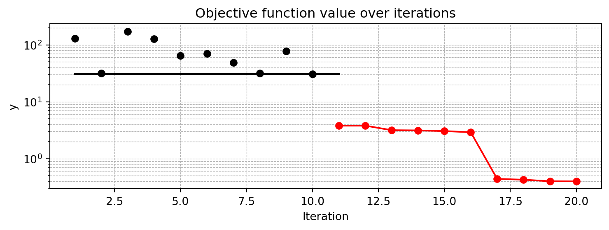
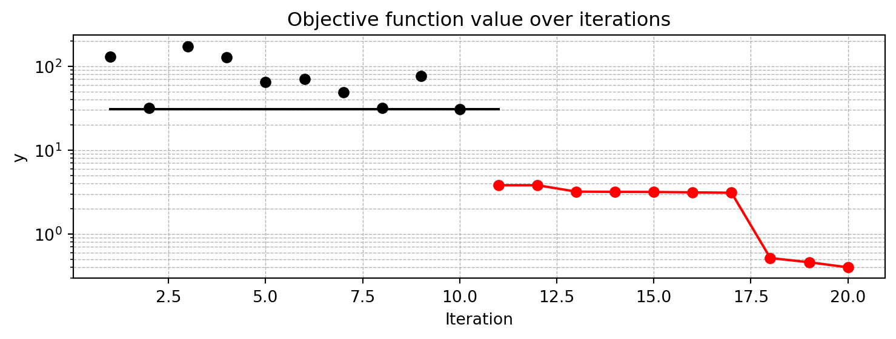
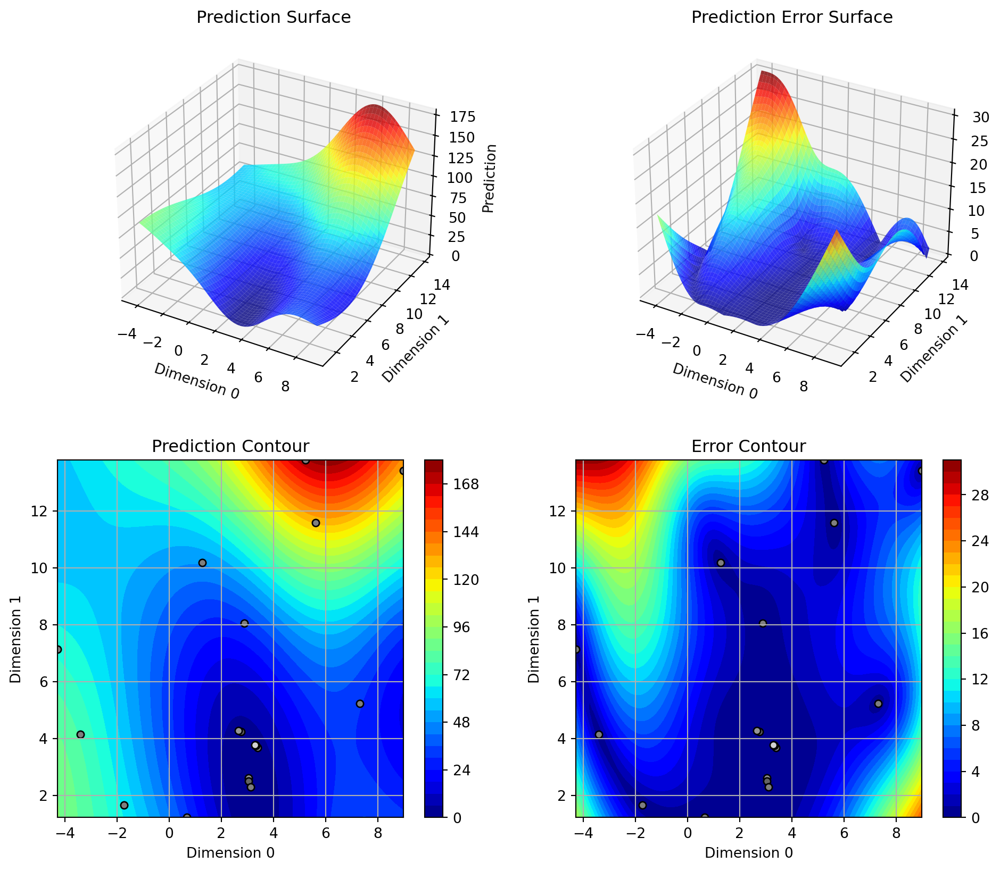
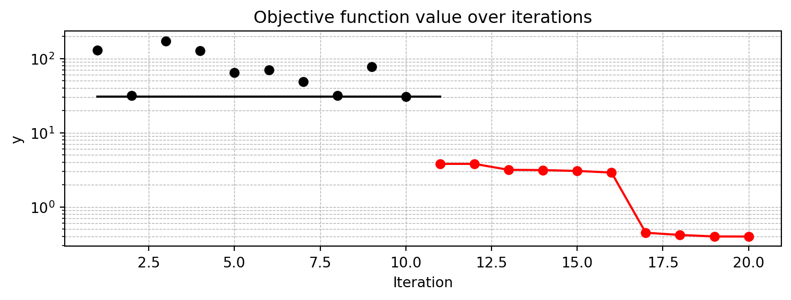

import numpy as np
from math import inf
from spotPython.fun.objectivefunctions import analytical
from spotPython.spot import spot
from scipy.optimize import shgo
from scipy.optimize import direct
from scipy.optimize import differential_evolution
from scipy.optimize import dual_annealing
from scipy.optimize import basinhopping
from spotPython.utils.init import fun_control_init, design_control_init, optimizer_control_init, surrogate_control_init4 Sequential Parameter Optimization: Using scipy Optimizers
As a default optimizer, spotPython uses differential_evolution from the scipy.optimize package. Alternatively, any other optimizer from the scipy.optimize package can be used. This chapter describes how different optimizers from the scipy optimize package can be used on the surrogate. The optimization algorithms are available from https://docs.scipy.org/doc/scipy/reference/optimize.html
4.1 The Objective Function Branin
The spotPython package provides several classes of objective functions. We will use an analytical objective function, i.e., a function that can be described by a (closed) formula. Here we will use the Branin function. The 2-dim Branin function is
$$y = a * (x2 - b * x1**2 + c * x1 - r) ** 2 + s * (1 - t) * cos(x1) + s,$$
where values of a, b, c, r, s and t are:
$a = 1, b = 5.1 / (4*pi**2), c = 5 / pi, r = 6, s = 10$ and $t = 1 / (8*pi)$.It has three global minima:
\(f(x) = 0.397887\) at \((-\pi, 12.275)\), \((\pi, 2.275)\), and \((9.42478, 2.475)\).
Input Domain: This function is usually evaluated on the square x1 in [-5, 10] x x2 in [0, 15].
from spotPython.fun.objectivefunctions import analytical
lower = np.array([-5,-0])
upper = np.array([10,15])
fun = analytical(seed=123).fun_branin4.2 The Optimizer
Differential Evolution (DE) from the scikit.optimize package, see https://docs.scipy.org/doc/scipy/reference/generated/scipy.optimize.differential_evolution.html#scipy.optimize.differential_evolution is the default optimizer for the search on the surrogate. Other optimiers that are available in spotPython, see https://docs.scipy.org/doc/scipy/reference/optimize.html#global-optimization.
dual_annealingdirectshgobasinhopping
These optimizers can be selected as follows:
surrogate_control = "model_optimizer": differential_evolution
As noted above, we will use differential_evolution. The optimizer can use 1000 evaluations. This value will be passed to the differential_evolution method, which has the argument maxiter (int). It defines the maximum number of generations over which the entire differential evolution population is evolved, see https://docs.scipy.org/doc/scipy/reference/generated/scipy.optimize.differential_evolution.html#scipy.optimize.differential_evolution
TensorBoard
Similar to the one-dimensional case, which is discussed in sec-visualizing-tensorboard-01, we can use TensorBoard to monitor the progress of the optimization. We will use a similar code, only the prefix is different:
fun_control=fun_control_init(
lower = lower,
upper = upper,
fun_evals = 20,
PREFIX = "04_DE_"
)
surrogate_control=surrogate_control_init(
n_theta=len(lower))Created spot_tensorboard_path: runs/spot_logs/04_DE__bartz10_2024-06-28_13-19-19 for SummaryWriter()spot_de = spot.Spot(fun=fun,
fun_control=fun_control,
surrogate_control=surrogate_control)
spot_de.run()spotPython tuning: 3.8004644561334935 [######----] 55.00%
spotPython tuning: 3.8004644561334935 [######----] 60.00%
spotPython tuning: 3.1590379739505225 [######----] 65.00%
spotPython tuning: 3.1345599589760926 [#######---] 70.00%
spotPython tuning: 2.8987595919440583 [########--] 75.00%
spotPython tuning: 0.4124604824941809 [########--] 80.00%
spotPython tuning: 0.40391426855740775 [########--] 85.00%
spotPython tuning: 0.3990718447916741 [#########-] 90.00%
spotPython tuning: 0.3990718447916741 [##########] 95.00%
spotPython tuning: 0.3990718447916741 [##########] 100.00% Done...
<spotPython.spot.spot.Spot at 0x3876b8390>4.2.1 TensorBoard
If the prefix argument in fun_control_init()is not None (as above, where the prefix was set to 04_DE_) , we can start TensorBoard in the background with the following command:
tensorboard --logdir="./runs"We can access the TensorBoard web server with the following URL:
http://localhost:6006/The TensorBoard plot illustrates how spotPython can be used as a microscope for the internal mechanisms of the surrogate-based optimization process. Here, one important parameter, the learning rate \(\theta\) of the Kriging surrogate is plotted against the number of optimization steps.
4.3 Print the Results
spot_de.print_results()min y: 0.3990718447916741
x0: 3.149600915888656
x1: 2.2983701643039107[['x0', 3.149600915888656], ['x1', 2.2983701643039107]]4.4 Show the Progress
spot_de.plot_progress(log_y=True)
spot_de.surrogate.plot()
4.5 Exercises
4.5.1 dual_annealing
- Describe the optimization algorithm, see scipy.optimize.dual_annealing.
- Use the algorithm as an optimizer on the surrogate.
Tip: Selecting the Optimizer for the Surrogate
We can run spotPython with the dual_annealing optimizer as follows:
spot_da = spot.Spot(fun=fun,
fun_control=fun_control,
optimizer=dual_annealing,
surrogate_control=surrogate_control)
spot_da.run()
spot_da.print_results()
spot_da.plot_progress(log_y=True)
spot_da.surrogate.plot()spotPython tuning: 3.800452934057194 [######----] 55.00%
spotPython tuning: 3.800452934057194 [######----] 60.00%
spotPython tuning: 3.1590242778566413 [######----] 65.00%
spotPython tuning: 3.1341475332648105 [#######---] 70.00%
spotPython tuning: 2.8915909597236436 [########--] 75.00%
spotPython tuning: 0.4195069442130439 [########--] 80.00%
spotPython tuning: 0.401848680281649 [########--] 85.00%
spotPython tuning: 0.3992571870039132 [#########-] 90.00%
spotPython tuning: 0.3992571870039132 [##########] 95.00%
spotPython tuning: 0.3992571870039132 [##########] 100.00% Done...
min y: 0.3992571870039132
x0: 3.150936988317143
x1: 2.2985561477641263

4.5.2 direct
- Describe the optimization algorithm
- Use the algorithm as an optimizer on the surrogate
Tip: Selecting the Optimizer for the Surrogate
We can run spotPython with the direct optimizer as follows:
spot_di = spot.Spot(fun=fun,
fun_control=fun_control,
optimizer=direct,
surrogate_control=surrogate_control)
spot_di.run()
spot_di.print_results()
spot_di.plot_progress(log_y=True)
spot_di.surrogate.plot()spotPython tuning: 3.812970247994418 [######----] 55.00%
spotPython tuning: 3.812970247994418 [######----] 60.00%
spotPython tuning: 3.162514679816068 [######----] 65.00%
spotPython tuning: 3.1189615135325983 [#######---] 70.00%
spotPython tuning: 2.6597698275013 [########--] 75.00%
spotPython tuning: 0.3984917773445744 [########--] 80.00%
spotPython tuning: 0.3984917773445744 [########--] 85.00%
spotPython tuning: 0.3984917773445744 [#########-] 90.00%
spotPython tuning: 0.3984917773445744 [##########] 95.00%
spotPython tuning: 0.3984917773445744 [##########] 100.00% Done...
min y: 0.3984917773445744
x0: 3.1378600823045257
x1: 2.3010973936899863

4.5.3 shgo
- Describe the optimization algorithm
- Use the algorithm as an optimizer on the surrogate
Tip: Selecting the Optimizer for the Surrogate
We can run spotPython with the direct optimizer as follows:
spot_sh = spot.Spot(fun=fun,
fun_control=fun_control,
optimizer=shgo,
surrogate_control=surrogate_control)
spot_sh.run()
spot_sh.print_results()
spot_sh.plot_progress(log_y=True)
spot_sh.surrogate.plot()spotPython tuning: 3.8004552384813834 [######----] 55.00%
spotPython tuning: 3.8004552384813834 [######----] 60.00%
spotPython tuning: 3.1590504084857294 [######----] 65.00%
spotPython tuning: 3.1341080537914 [#######---] 70.00%
spotPython tuning: 2.8853849830561646 [########--] 75.00%
spotPython tuning: 0.4239413355798014 [########--] 80.00%
spotPython tuning: 0.4016765366794104 [########--] 85.00%
spotPython tuning: 0.3993233052368623 [#########-] 90.00%
spotPython tuning: 0.3993233052368623 [##########] 95.00%
spotPython tuning: 0.3993233052368623 [##########] 100.00% Done...
min y: 0.3993233052368623
x0: 3.1514683455618786
x1: 2.2984189502295536

4.5.4 basinhopping
- Describe the optimization algorithm
- Use the algorithm as an optimizer on the surrogate
Tip: Selecting the Optimizer for the Surrogate
We can run spotPython with the direct optimizer as follows:
spot_bh = spot.Spot(fun=fun,
fun_control=fun_control,
optimizer=basinhopping,
surrogate_control=surrogate_control)
spot_bh.run()
spot_bh.print_results()
spot_bh.plot_progress(log_y=True)
spot_bh.surrogate.plot()spotPython tuning: 3.80045375093536 [######----] 55.00%
spotPython tuning: 3.80045375093536 [######----] 60.00%
spotPython tuning: 3.159009257538889 [######----] 65.00%
spotPython tuning: 3.1341512916720102 [#######---] 70.00%
spotPython tuning: 2.8796407604155867 [########--] 75.00%
spotPython tuning: 0.414633458827506 [########--] 80.00%
spotPython tuning: 0.40117926479755717 [########--] 85.00%
spotPython tuning: 0.3993792812618935 [#########-] 90.00%
spotPython tuning: 0.3993792812618935 [##########] 95.00%
spotPython tuning: 0.3993792812618935 [##########] 100.00% Done...
min y: 0.3993792812618935
x0: 3.150848989866496
x1: 2.3006645011798197

4.5.5 Performance Comparison
Compare the performance and run time of the 5 different optimizers:
differential_evolutiondual_annealingdirectshgobasinhopping.
The Branin function has three global minima:
- \(f(x) = 0.397887\) at
- \((-\pi, 12.275)\),
- \((\pi, 2.275)\), and
- \((9.42478, 2.475)\).
- Which optima are found by the optimizers?
- Does the
seedargument infun = analytical(seed=123).fun_braninchange this behavior?
4.6 Jupyter Notebook
Note
- The Jupyter-Notebook of this lecture is available on GitHub in the Hyperparameter-Tuning-Cookbook Repository